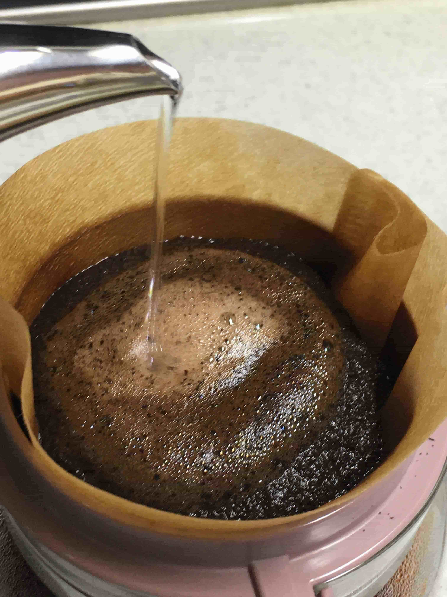

ほのぼのタイム
ほんのひと時、息抜きしてみませんか?
どんな時も息抜きをしなければやるべき事もテキパキこなせる事もこなせなくなる、そう誰もが感じた事があるのではありませんか?
そんな事を思って、今後こちらにはいろんなessayを載せていきたいと思います。
今回は私をリラックスさせてくれるcoffeeに関するessayです。
coffeeと聞いて皆さんがイメージするcoffeeはどんなものでしょうか。
子供の頃には苦い飲み物、ちょっぴり大人へ背伸びしてみた飲み物、いつの間にか自分をリラックスさせてくれる飲み物、そして、コミュニティの場に当然のように現れる飲み物、など、さまざまな形になって、気付けばずっとそばにあった飲み物かもしれません。
今、日本でどんな世代にも人気のスターバックスの元会長 ハワード・シュルツの名言があります。
“I was taken by the power that savoring a simple cup of coffee can have to connect people and create community.”
（日本語訳）
簡単な一杯のコーヒーを味わうことで、人と人を繋ぎコミュニティを築くことができるという力に、私は心を奪われた。
この名言は、何気なく飲み続けてきたcoffeeを改めて見つめさせてくれます。
こだわり始めると新たな発見がある。
そこにまた、新鮮さを感じ、新しい出会いもあり、ワクワクした気持ちになる。
それこそが自分をリフレッシュさせてくれている。
皆さんも何かにちょっとこだわり、改めて感じてみてはいかがでしょうか?
ふと振り返るといつもの事にとても感動できる自分がいるかもしれません。